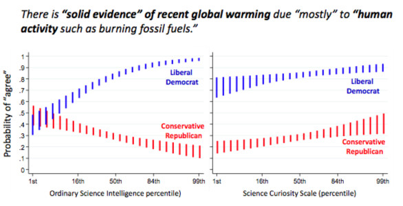

Top MLB hitters make their own luck, but not the way you might think
There are almost half a million high school baseball players in America, but only about 5% will play on a college team [1, 2]. Of that 5%, only 10% will be drafted by an MLB team, and of all minor leaguers, only 10% will ever get drafted into the majors [3]. MLB players are the best of the best, but there are a LOT of them.

MLB teams carry about 40 players in a roster, and there are 30 teams, so that’s over 1,000 top-tier players [4]. Surprisingly, only about 10 players on the roster get to bat on a regular basis, so that means around 300 across the whole league [5]. Now, one would think these players would be the best of the best of the best! Yet every year, there are only 10 players across all 30 teams that can claim a spot in the MLB Top 10 Home Run leader board. Who are they? Are they really special? If so, what does it take to be this special? What does it take to be a Top 10 Home Run Hitter in the MLB?

Since only about 10 players on the roster get to bat on a regular basis, if a player is not part of the starting batting rotation, his chances of hitting a lot of home runs that season is near zero. The more games a player plays, the more chances at bat, and the more likely he is to start adding home runs to his tally. The chart above plots the career home runs versus number of games played for the Top 100 All Time (the first 100 in the 1000 group) [6]. The highest home run totals belong to those players with the most games played. The series have a positive correlation with an R2 of 0.3542. Games played do not tell the whole story, but it suggests that it maybe a material factor in the unusual performance of Top 10 hitters.

In the past 26 years only 108 distinct players have claimed a Top 10 spot. This is remarkable given that every year everyone starts at 0, and there are at about 300 starters playing at least 160 regular season games every year. Also, a major league player is expected to play less than 6 years before retiring, so new challengers arrive every year, and the game can be hard on the body, especially for hitters. The graph above compares the Home Run count of Top 10 hitters against a random sample of MLB batters around the same period. It makes a high confidence case that Top 10 performance is unlikely to be the result of random variations.
Moreover, 57 of the 108 Top 10 hitters managed to claim a Top 10 spot multiple times during the period examined, and 16 of these players made the cut more than 4 times! Also, about half of the players that make the list once, will make the list again. Some do it the very next year, while a few have done it up 6 times in a row! This suggests that many Top 10 players have the ability to accomplish the extraordinary year in and year out. So, what could they be doing differently?
Well, one thing some are doing differently is taking more risk. There are 44 players in the Top 10 Home Run list that also made the Top 10 Strikeout list during the same period . Analyzing the number of times a player has appeared in the Home Run list against the number of times he appeared in the Strikeout list one can find a positive correlation with an R2 of 0.308. This suggests that some of these players may be stepping up to the plate with a ”home run or go home” mentality. This may indicate that Top 10 hitters are more willing than the average player to swing for the fences. Again, this does not tell the whole story, but it suggests that a risky batting strategy maybe a material factor in the unusual performance of Top 10 hitters. So, what else could they be doing differently?

Sadly, there is large number of cheaters among the most successful and most consistent Top 10 Home Run hitters. Of the 16 players that had more than 4 appearances in the Top 10 list during the 1992-2017 period, 9 have been caught cheating. That is more than half! Interestingly, of the 7 that remain, almost half of them also made several appearances in the Top 10 Strikeout list.
So, what does it take to be a Top 10 Home Run Hitter in the MLB? It seems that embracing RISKY strategies is the likely answer. Risk of getting struck out a lot, and risk of getting caught cheating. So, are Top 10 players the Best of the Best, or the Worst of Best?

References
[Rest of Images are Original. Rolando H Rabines]
Embrace Surprises
When it comes to explaining extraordinary outcomes, I believe in luck, even more than I believe in reason. I find that luck is often more useful when it comes to understanding the world as it really is. I learned early on that reason is too vulnerable to personal bias, and that outcomes are less deterministic than I wish. This makes me skeptical of even the best reasoned and well supported arguments. I tend to doubt any explanation that attributes extraordinary outcomes to a single factor or individual skills. I tell myself there are too many variables, and that people are really good at reverse engineering explanations that fit their assumptions. I am even disappointed when I cannot make a good argument for luck as key factor. This approach has served me well, and I was looking forward to many more years of being the person that “always knew the explanation was too neat to be true”. I liked leading with skepticism. Recently, however, I stumbled onto an argument for leading with curiosity instead.
It all started a couple of months ago, when I ran across a paper entitled Mozart or Pelé? [1] As an avid soccer player, and retired amateur pianist, the question was too hard to resist. The paper documents a study that tried to characterize the relative advantages of playing sports versus playing a musical instrument. According to the authors, many studies have concluded that sports and music are beneficial, and worth the investment of time and money, but no study had provided information that would help a parent determine which was more beneficial in a head to head comparison. They concluded that music holds a slight edge, but that the best approach was to do both. However, their conclusion was not as interesting to me, as the fact that they spent more than sixty of the almost eighty-page report figuring out if their conclusions were “robust”. In other words, they wanted to know how likely their conclusions were to hold beyond their data set. They used various statistical analysis techniques to conclude that they were, within a reasonable degree of confidence, but it left me wondering how other researchers tackled the question of robustness.
What I found was somewhat disturbing. The consensus seems to be that any capable researcher looking for a particular correlation will probably find it whether it exists in the real world or not [2]. It is just a matter of finding the right data, considering only the right variables, and using the right algorithm. The world is full of spurious correlations [3], and the analytics technologies that I so admire, are making the task of distinguishing signal from noise harder, not easier. Even when there is no fraudulent intent, and standard data-scientific methodologies are followed, unless there is a real effort to challenge the results, conclusions can be incorrect and misleading. It is human nature to see patterns where there are none, and confirm biases.
So, what can be done about it? For one, researchers can commit to adopting an ensemble learning approach which looks for independent models to converge [2]. If different samples from the same data set and different algorithms converge then there is less likelihood the pattern false. Researchers can also use A/B testing in which alternative models are pitted against each other, looking for the one with the most predictive value. Also, researchers can apply classic robustness analysis as performed in the Mozart or Pelé study, in which data is examined for factors such as selection bias and heterogeneity [1]. However, researchers are rarely able to eliminate all sources of uncertainty, and must disclose their concerns. Increasingly, people that consume research findings use these disclosures to read into their findings what they want [4]. People that were inclined to agree with their conclusions will take them as true, and people inclined to reject them feel justified in doing so. Ironically, research aimed at creating new knowledge is being used more and more to confirm old assumptions [5]. In some cases, such as global warming and gun violence research, the inability to change minds through facts has deadly consequences. It seems to be getting worse. Figure below represents division of Democrat and Republic Party members over time. Grey area is common votes (both democrat and republican coincide).
There has never been more information, and more ways to process and communicate information, as now. However, studies show that any attempts to persuade people with an opposing view, are more likely to more deeply entrench them in their views [6]. People are using logic and reason to protect the groups to which they belong from facing uncomfortable truths. In fact, the smarter a person is, the less likely he/she is to be persuaded by new facts. In a recent study, people with a range of math skills were given data about a drug trial, and were asked to determine the how effective was treatment [6]. As expected, people with stronger math skills found to the correct answer more often than those with weaker math skills. However, when given data about a gun control measure, people with strong math skills were 45% more likely to find the correct answer when the data agreed with their viewpoint on gun control. Smart people use the superior power of their minds to create better arguments against information that challenges their beliefs. So, if not the smartest, who then is our best hope for discerning fact from fiction? Truth from lies? Who? The curious.

Studies show people that are curious are less polarized in their views of contentious issues [7]. Given the same data, curious people on opposing sides of an issue, are more likely to agree with each other. The lesson is that engaging a subject critically, even when using the best analytics, is unlikely to uncover the truth, unless the subject is approached with curiosity. Embrace surprises, and beware of confirmation.
References